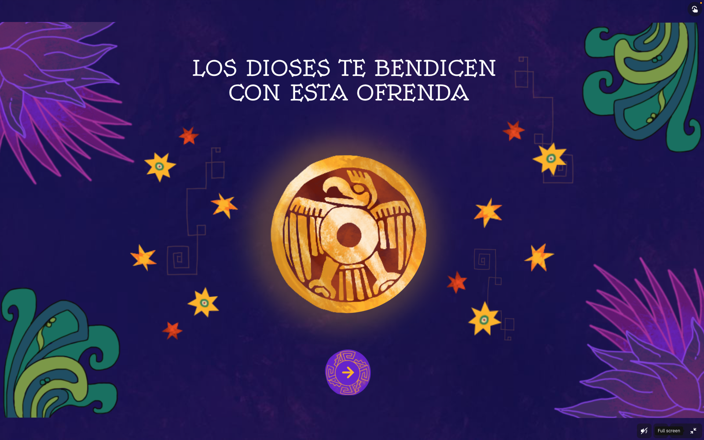

Descripción del Protocolo
NotaPasos
Diagrama de Flujo

Anexos
Material
- Tubos falcon 50 ml
- Pipeta serológica 10 ml
Notas
—debe ser un proceso rápido para tener buena viabilidad—
Mantener un cultivo celular in vitro en condiciones apropiadas para su crecimiento, propagación o almacenamiento para los fines que se requiera.